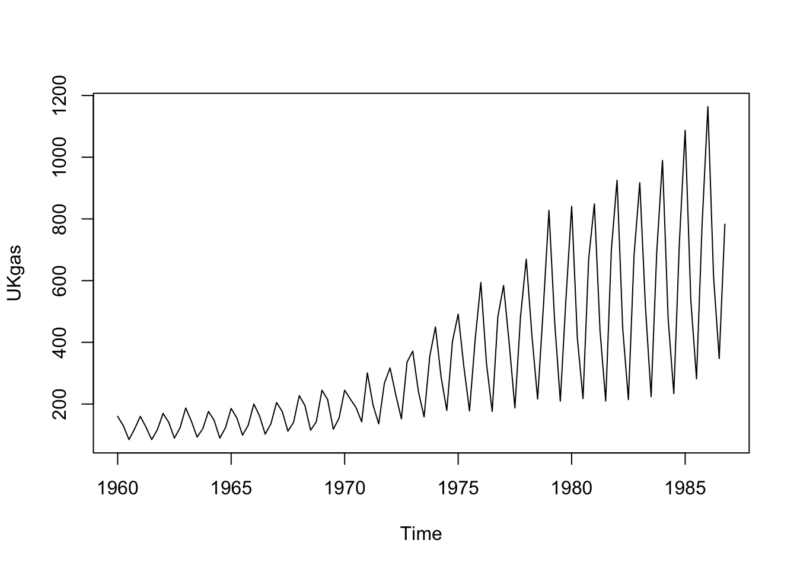
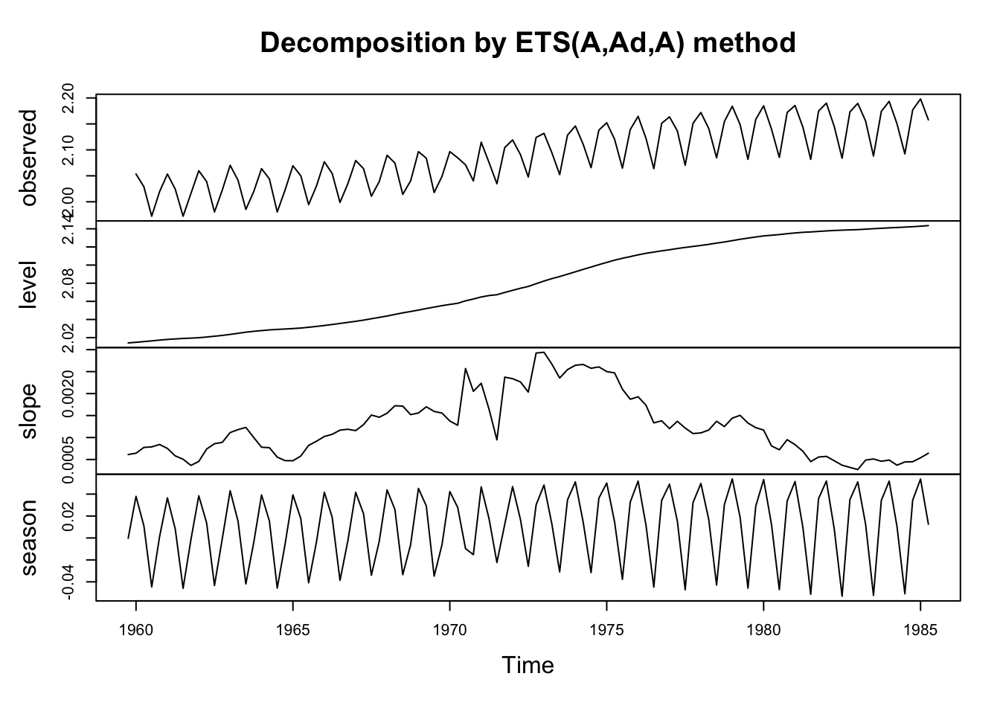
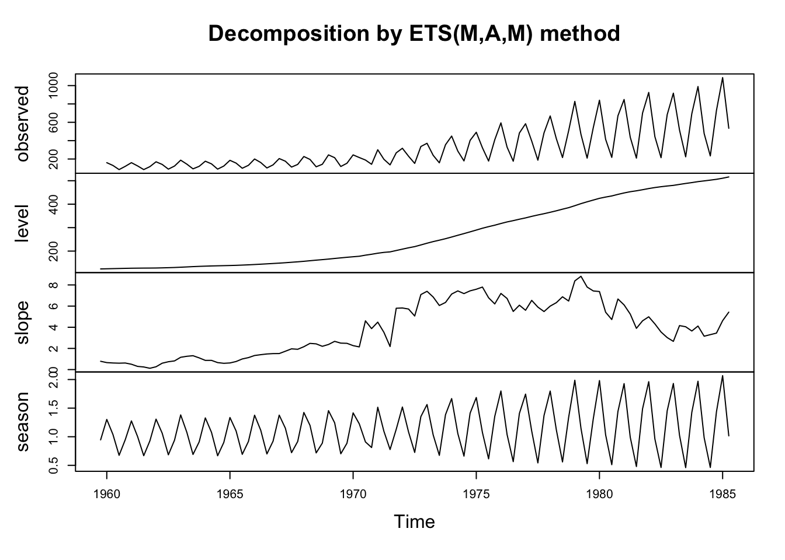
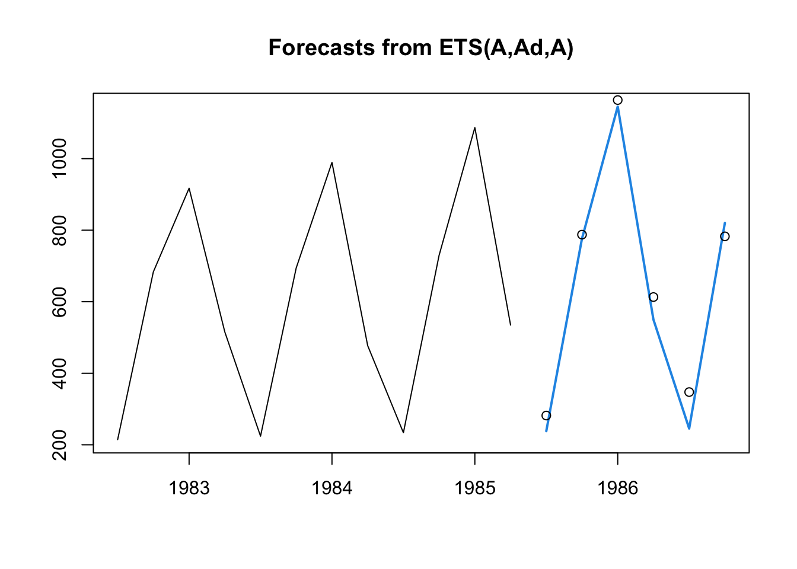
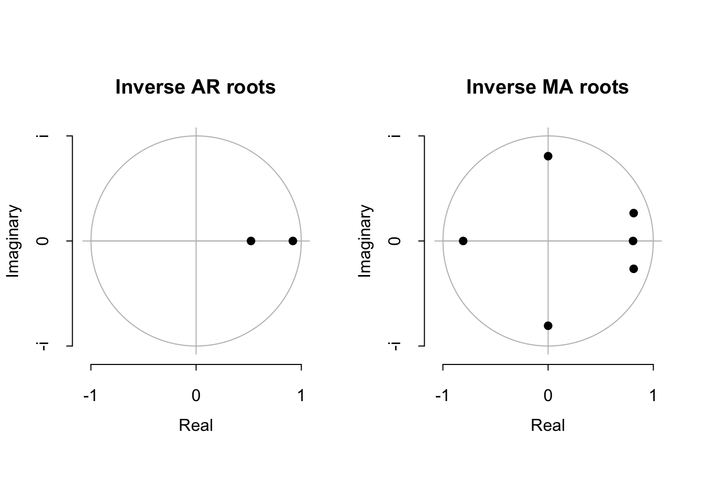
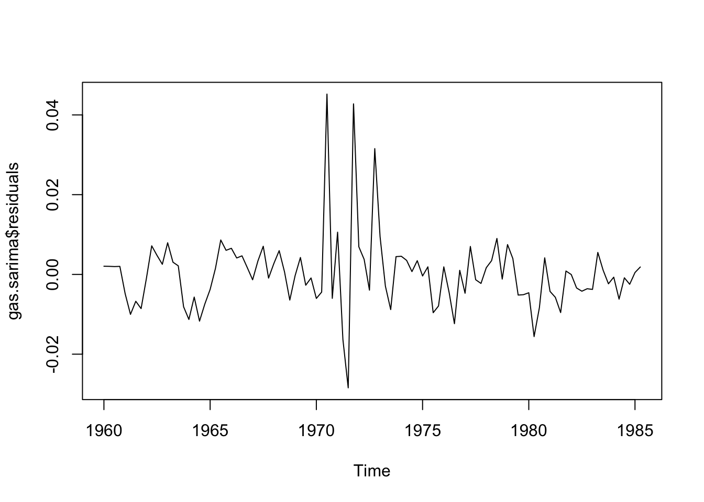
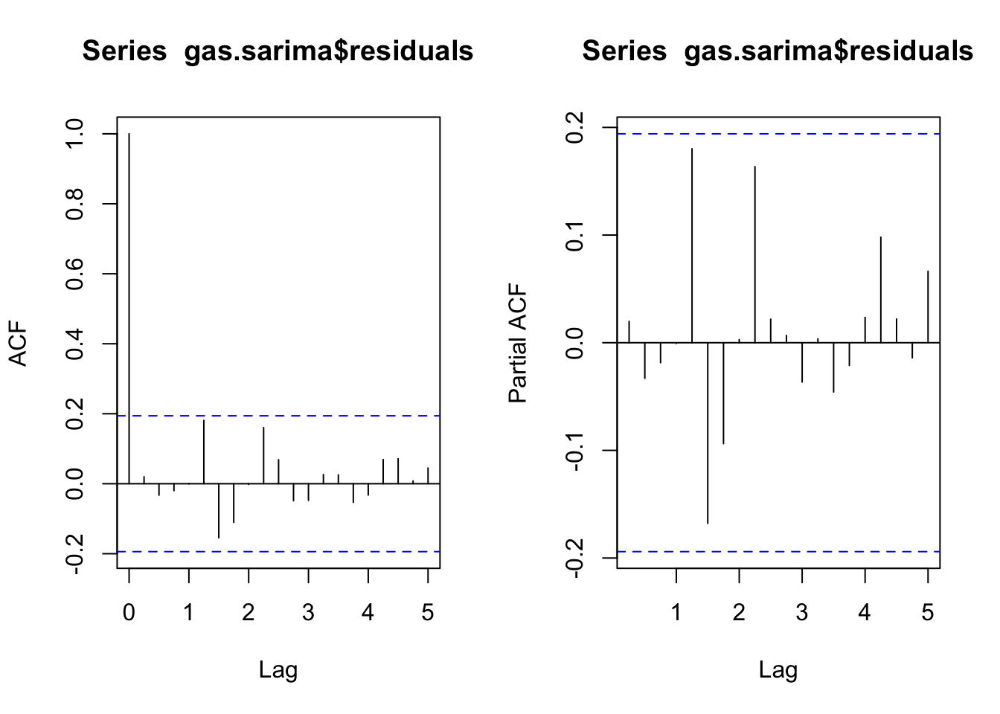
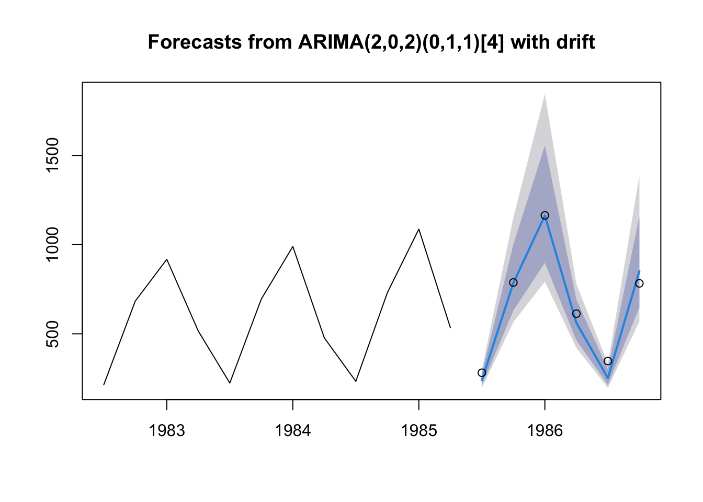

library(forecast)
library(MASS)
library(tseries)Seasonal models in R
Time series functions used in this document
In the table below, packages with italicized names will need to be installed, while the package names in a standard font face can be found in most base R distributions (though they may need to be loaded into your workspace).
| Package | Function name | Purpose |
|---|---|---|
| stats | window | Subset a time series |
| forecast | ets | Fit exponential smoothing models |
| forecast | forecast | Look-ahead prediction of a ts model |
| tseries | adf.test | ADF stationarity test |
| tseries | kpss.test | KPSS stationarity test |
| forecast | plot.Arima | Plot the inverse AR and MA roots |
| forecast | plot.forecast | Plot predictions from a ts model |
| stats | Box.test | Box-Ljung test for autocorrelation |
Fitting ETS models in R
The workhorse function forecast::ets (or its tidyverse equivalent, fable::ETS) can fit any of the exponential smoothing models described in Forecasting: Principles and Practice 2nd edition or 3rd edition, respectively.
Let’s apply it to a quarterly series of UK quarterly gas consumption:1
plot(UKgas)
gas.train <- window(UKgas,end=1985.25)
gas.test <- window(UKgas,start=1985.5)The data are clearly non-stationary, with a multiplicative seasonality (perhaps corresponding to a growing population). We might be able to control this multiplicative effect with a Box-Cox transformation, or through the explicit use of multiplicative errors and seasonal effects. Let’s examine those two options, holding the last six quarters back as a prediction testbed.
Fitting an additive-only model with a Box-Cox transformation
ets.aaa <- ets(gas.train,model='AAA',lambda='auto')
summary(ets.aaa)ETS(A,Ad,A)
Call:
ets(y = gas.train, model = "AAA", lambda = "auto")
Box-Cox transformation: lambda= -0.4329
Smoothing parameters:
alpha = 0.0306
beta = 0.0281
gamma = 0.5365
phi = 0.98
Initial states:
l = 2.0142
b = 6e-04
s = -3e-04 -0.0452 0.0084 0.0371
sigma: 0.0102
AIC AICc BIC
-453.1036 -450.6861 -426.8539
Training set error measures:
ME RMSE MAE MPE MAPE MASE ACF1
Training set 3.536558 30.18087 19.39172 0.5496738 6.064928 0.7319039 -0.1072051plot(ets.aaa)
The low values of the smoothing parameters \(\alpha\) and \(\beta\) suggest that long-ago observations are still quite useful in setting the level and the trend for the current quarter’s gas prices. In contrast, the relatively high value of the smoothing parameter \(\gamma\) suggests that the most recent seasonal pattern is more helpfully informative than prior years’ seasonal patterns.
A damped trend was selected over an undamped trend — we can manually change this with the damped=FASE argument, or keep it. Since the damping parameter \(\phi\) is 0.98, the difference between the two models will be relatively small.
Note the significant transformation achieved with the Box-Cox transformation (where \(\lambda \approx -0.43\)), which changes the series to something more closely approximating trend-stationarity. And yet, the seasonal plot still shows nonconstant variance (which is likely why the parameter \(\gamma\) is relatively high). It’s hard to know whether this is a bug or a feature, i.e. whether a transformation could draw useful more information out of the past or not.
Fitting a multiplicative model without Box-Cox transformation
ets.zam <- ets(gas.train,model='ZAM',lambda=NULL)
summary(ets.zam)ETS(M,A,M)
Call:
ets(y = gas.train, model = "ZAM", lambda = NULL)
Smoothing parameters:
alpha = 0.0279
beta = 0.0277
gamma = 0.5994
Initial states:
l = 123.9697
b = 0.7846
s = 0.9453 0.6771 1.0464 1.3312
sigma: 0.1164
AIC AICc BIC
1170.080 1172.037 1193.705
Training set error measures:
ME RMSE MAE MPE MAPE MASE ACF1
Training set 3.835205 30.89018 20.1769 0.06514202 6.418552 0.761539 -0.1309169plot(ets.zam)
By using the argument ‘Z’, we can tell the ets() function to choose additive, multiplicative, or none for each component. In this case, I was sure about requesting an additive trend (ets() won’t actually fit most multiplicative trends), and a multiplicative seasonality, but was unsure about whether the error process was best viewed as additive or multiplicative. R chose multiplicative.
However, the summary is disappointing. This looks like a strictly worse version of our earlier model. Similar smoothing parameters, similar (but worse) model metrics, and a more chaotic slope plot which suggests that the model is trying to cram a lot of information into a slope in order to incorporate large and unexpected changes in the series. Let’s try restoring the Box-Cox transformation.
Letting R decide
ets.zzz <- ets(gas.train,model='ZZZ',lambda='auto',biasadj=TRUE)
summary(ets.zzz)ETS(A,Ad,A)
Call:
ets(y = gas.train, model = "ZZZ", lambda = "auto", biasadj = TRUE)
Box-Cox transformation: lambda= -0.4329
Smoothing parameters:
alpha = 0.0306
beta = 0.0281
gamma = 0.5365
phi = 0.98
Initial states:
l = 2.0142
b = 6e-04
s = -3e-04 -0.0452 0.0084 0.0371
sigma: 0.0102
AIC AICc BIC
-453.1036 -450.6861 -426.8539
Training set error measures:
ME RMSE MAE MPE MAPE MASE
Training set -1.311548 30.33744 19.56546 -0.5017562 6.134186 0.7384615
ACF1
Training set -0.08345354R confirms our earlier choice of the additive Holt-Winters model with damped trend. By using the biasadj=TRUE argument, we can remove bias from our forecast estimates (after Box-Cox transforming the data to fit the model, the inverse-Box-Cox forecasts will be for the median value of \(\hat{y}_t\), not the mean).
How would this model finish out our series?
plot(forecast(ets.zzz,h=6),include=12,PI=FALSE)
points(gas.test)
In the code above I’ve set h=6 to define the number of forecasted periods, include=12 to limit how much of the prior oobserved series appears on the plot, and PI=FALSE to remove the prediction intervals (which rely upon distributional theory we have not yet decided to use).
On balance, I would say these predictions are quite good! The seasonal cycle and past exponential growth both carry forward well into 1986.
Fitting SARIMA models in R
We can try to fit a SARIMA model to the same dataset. Because ARIMA models assume a stationary series, we will first have to do what we can to achieve stationarity:
gas.sarima <- auto.arima(gas.train,approximation=FALSE,stepwise=FALSE,seasonal=TRUE,lambda='auto')
summary(gas.sarima)Series: gas.train
ARIMA(2,0,2)(0,1,1)[4] with drift
Box Cox transformation: lambda= -0.4328729
Coefficients:
ar1 ar2 ma1 ma2 sma1 drift
1.4412 -0.4796 -1.6261 0.7314 -0.4244 0.0013
s.e. 0.1918 0.1956 0.1498 0.1548 0.1151 0.0004
sigma^2 = 9.742e-05: log likelihood = 316.18
AIC=-618.37 AICc=-617.12 BIC=-600.27
Training set error measures:
ME RMSE MAE MPE MAPE MASE ACF1
Training set -1.358139 30.5077 19.739 -0.3803901 6.282248 0.7450115 0.1790798By using the arguments approximation=FALSE and stepwise=FALSE, I ensure that R takes its time to fully calculate every reasonable model before choosing the best one. These arguments may be inconvenient or even impossible with large datasets or with long-period seasonality, where R may take several minutes to find the best model.
R returns a reasonable idea: The changes in gas prices vs. the same quarter last year are weakly mean-reverting around an exponential drift, but with some persistence (when this quarter’s year-over-year change is negative or positive, the next one will likely be similar) and some error correction (unexpected anomalies rarely happen in consecutive years). But is it a reasonable model?
plot(gas.sarima)
plot(gas.sarima$residuals)
suppressWarnings(adf.test(gas.sarima$residuals))
Augmented Dickey-Fuller Test
data: gas.sarima$residuals
Dickey-Fuller = -3.6612, Lag order = 4, p-value = 0.03112
alternative hypothesis: stationarysuppressWarnings(kpss.test(gas.sarima$residuals))
KPSS Test for Level Stationarity
data: gas.sarima$residuals
KPSS Level = 0.19341, Truncation lag parameter = 4, p-value = 0.1Box.test(gas.sarima$residuals,type='Ljung')
Box-Ljung test
data: gas.sarima$residuals
X-squared = 0.041022, df = 1, p-value = 0.8395par(mfrow=c(1,2))
acf(gas.sarima$residuals)
pacf(gas.sarima$residuals)
We see that none of the roots are perilously close to the edge of the unit circle, which is a good sign (R will always try to estimate a stationary ARIMA model, so when the roots are very close to the unit circle we have some evidence that the true process is actually nonstationary). We also see that the estimated innovations are relatively “clean” (stationary, no signs of remaining autocorrelation).
plot(forecast(gas.sarima,h=6),include=12)
points(gas.test)
Our predictions are very good with this method too! We should not really be surprised: as described by Hyndman and Athanasopoulos, purely additive ETS models can be represented as ARIMA models and vice versa. Although the exact form of our chosen ETS model and our SARIMA model are not equivalent, they are close.
Note that these predictions come with confidence intervals, since ARIMA models suppose a Gaussian white noise error process. We can recover these intervals and/or select new ones using the forecast function or alternatively with the predict.Arima function.
forecast(gas.sarima,h=6) Point Forecast Lo 80 Hi 80 Lo 95 Hi 95
1985 Q3 240.4994 210.7762 276.6159 197.1367 298.9494
1985 Q4 785.2351 630.3943 1000.9633 565.6710 1150.9506
1986 Q1 1163.0804 898.4302 1555.4689 792.2109 1843.8957
1986 Q2 561.4655 463.5813 691.9078 421.4312 779.1419
1986 Q3 252.2123 214.0962 300.8558 197.1917 332.2017
1986 Q4 851.1074 649.1042 1156.9429 569.1086 1386.0739Which model we use, ETS or SARIMA, is a judgment call at this point: neither model is terribly flawed nor much better or worse than the other. We might prioritize in-sample RMSE, out-of-sample RMSE, other measures such as MAE, domain expertise, parsimony, prior literature, etc. We should not use AIC or other likelihood-based techniques, as these are sensitive to how we represent Y, which can change with orders of differencing or model classes.
#ETS metrics
c(is.rmse=sqrt(mean((gas.train-ets.zzz$fitted)^2)),
oos.rmse=sqrt(mean((gas.test-forecast(ets.zzz,h=6)$mean)^2))) is.rmse oos.rmse
30.33744 54.96811 #SARIMA metrics
c(is.rmse=sqrt(mean((gas.train-gas.sarima$fitted)^2)),
oos.rmse=sqrt(mean((gas.test-forecast(gas.sarima,h=6)$mean)^2))) is.rmse oos.rmse
30.50770 54.93136 Gas here meaning natural gas, and not gasoline, which in the UK would be called petrol.↩︎